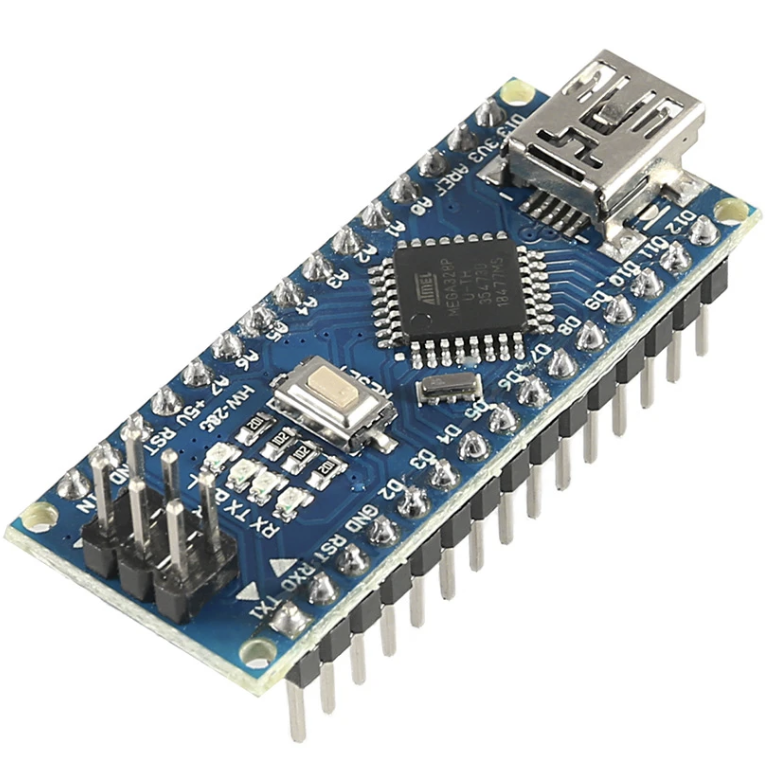
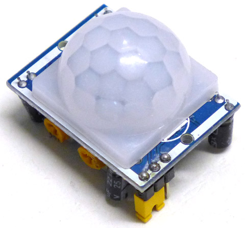
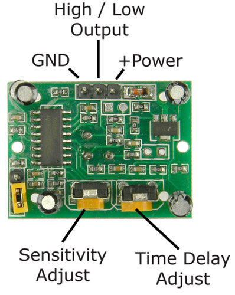
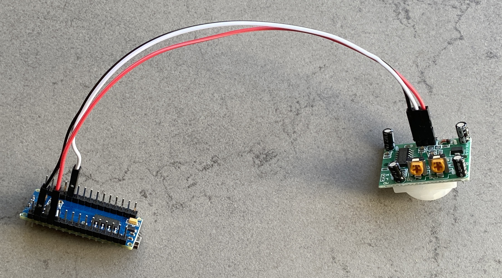
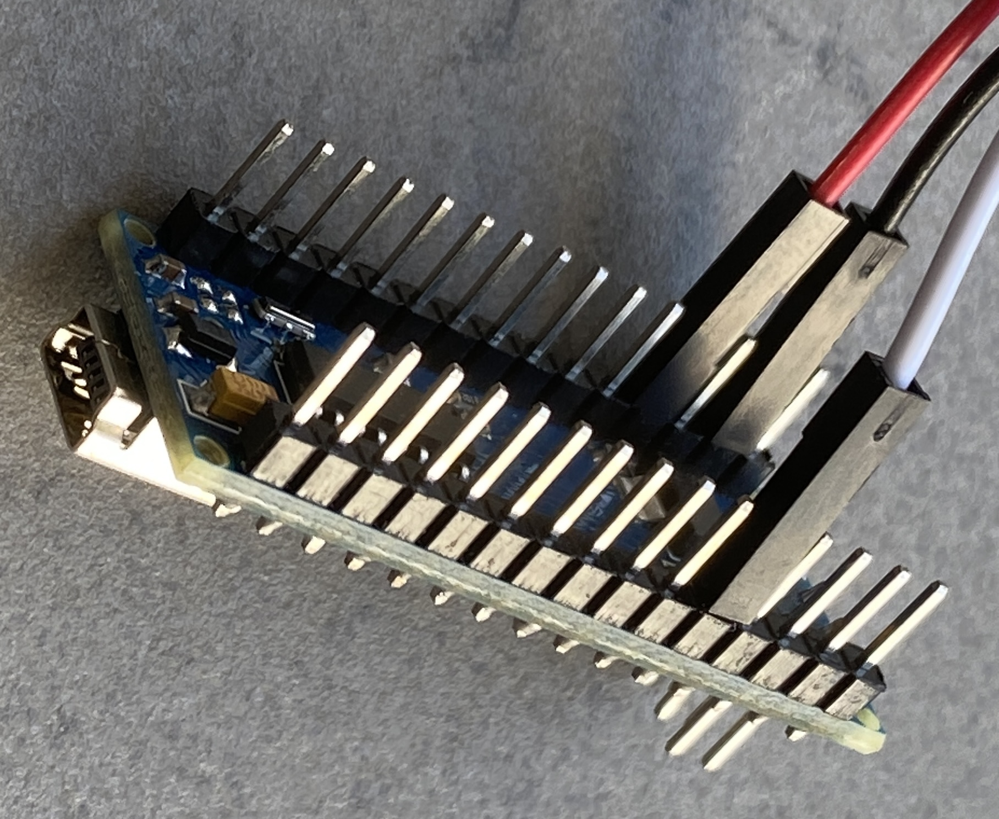
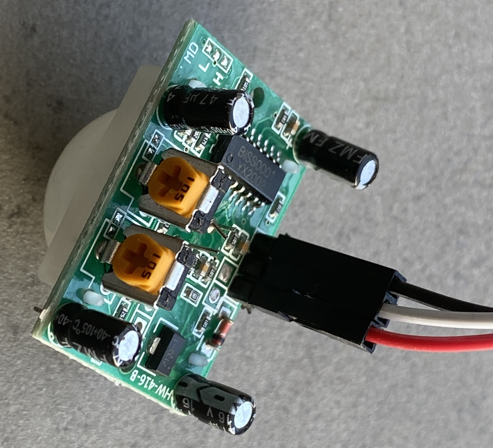
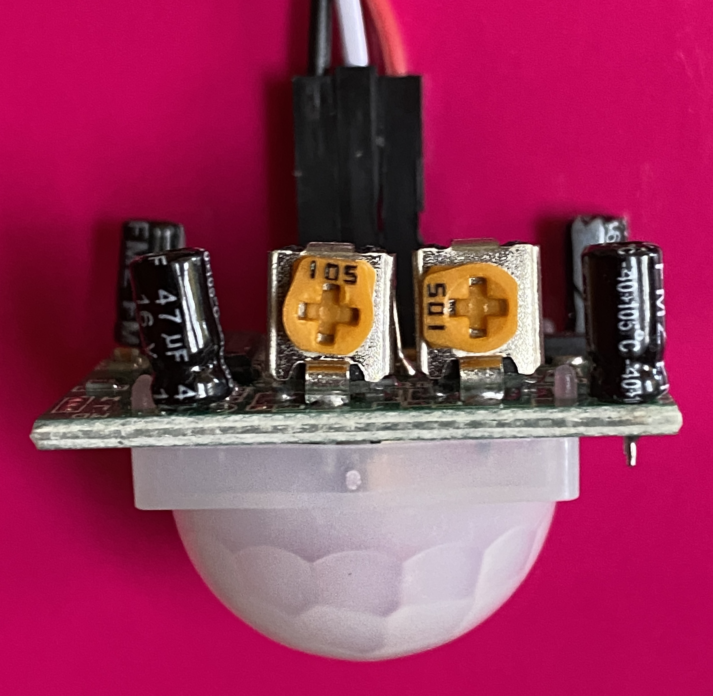
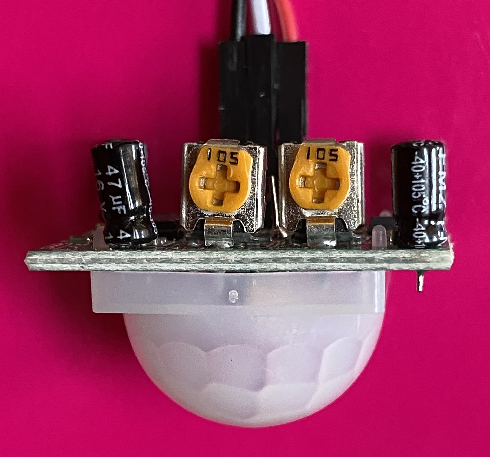
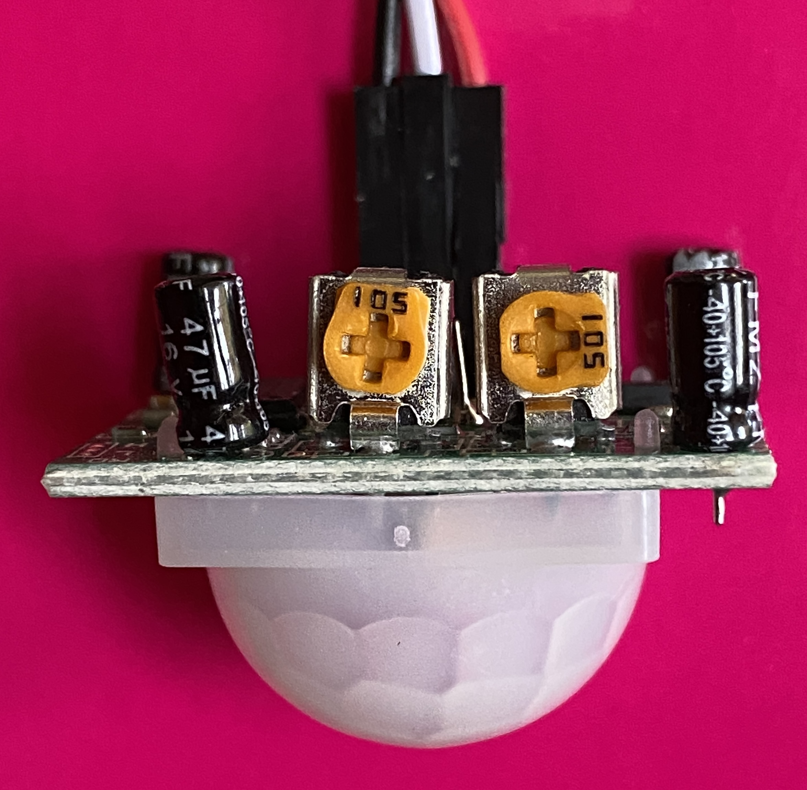

Installation of a NUC as a home assistant server with a control screen
{kind=link}
Intel NUC NUC10i5FNKN UCFF Noir i5-10210U 1,6 GHz
Install a Debian OS
Add a special user
Create a new user that will be used only for viewing the control screen.
How to mount disk on a Mac
Install Netatalk
Auto login
Go to the user preferences of Gnome window manager and check "automatic connection"
{kind=link}
VNC
To share the screen, go to preferences panel and Share sub-panal and set the passwd. (right clic on default connection)
{kind=link}
You can't connect directly to the server as it is waiting for a password you have just entered The keyring containing this password is normally unlocked when logging into the account in desktop mode. When you are in auto login mode, the keyring is not unlocked. So you can't connect derectly to the VNC server because it wan't the password.
The only solution I found is to remove the keyring password. It's really rotten, a big security hole. To do that, go to the keyring and clic right on the default connection. Change the password with an empty string. See the video from Techno Focus
{kind=link}
Remove screen saver
Created symlink /etc/systemd/system/sleep.target → /dev/null.
Created symlink /etc/systemd/system/suspend.target → /dev/null.
Created symlink /etc/systemd/system/hibernate.target → /dev/null.
Created symlink /etc/systemd/system/hybrid-sleep.target → /dev/null.
Create your web pages
In my case, I put all my HTML files in ~/Bureau/ in particular ìndex.html
Start Firefox in kiosk mode at boot
Create Shell script
In the directory ~/Bureau/ add the file start_firefox.sh with code:
#!/bin/bash
urls=(\
"/home/hasen/Bureau/Web/index.html" \
"/home/hasen/Bureau/Web/index_webcam.html" \
"http://nuc.local:8123/ecran-cuisine/0?kiosk" \
"http://nuc.local:8123/ecran-cuisine-2/0?kiosk" \
"https://embed.waze.com/fr/iframe?zoom=14&lat=45.253203623014485&lon=5.878454741111851" )
# Ouvre Firefox en arrière-plan
firefox -kiosk &
sleep 1
while true
do
for url in "${urls[@]}"
do
# Utilise xdotool pour simuler Ctrl+L (focus sur la barre d'adresse)
xdotool key ctrl+l
sleep 0.5
xdotool type "$url"
xdotool key Return
sleep 5
done
done
# Old code
#!/bin/bash
# You have to put this little break, otherwise the first page of Firefox on all black. Maybe a bug?
#sleep 3
# I have install full version of firefox
#/opt/firefox/./firefox --kiosk index.html
Run the shell script at boot
Create the file vi $HOME/.config/autostart/jmh-firefox.desktop
(it is possible that 'autostart' doesn't exist) and add:
[Desktop Entry]
Name=Script-jmh-start-firefox
GenericName=A descriptive name
Comment=Some description about your script
Exec=/home/hasen/Bureau//home/hasen/Bureau/
Terminal=false
Type=Application
X-GNOME-Autostart-enabled=true
Quit kiosk mode
You can press ALT+F4 Alt+F4 (or Mac : fn + Cmd + F4) to quit kiosk Mode.
PIR detection
Arduino mini + PIR sensor HC-SR501
  
{kind=link}
{kind=link}
{kind=link}
Wire
  
{kind=link}
{kind=link}
{kind=link}
Time Delay Adjustment
  
{kind=link}
{kind=link}
{kind=link}
Delay is (from left to right) 10s, 1000s (1'30'') and 2100s (3'30'')
Find USB port
oror
Bus 004 Device 001: ID 1d6b:0003 Linux Foundation 3.0 root hub
Bus 003 Device 001: ID 1d6b:0002 Linux Foundation 2.0 root hub
Bus 002 Device 001: ID 1d6b:0003 Linux Foundation 3.0 root hub
Bus 001 Device 003: ID 1a86:7523 QinHeng Electronics CH340 serial converter
Bus 001 Device 002: ID 8087:0026 Intel Corp.
Bus 001 Device 001: ID 1d6b:0002 Linux Foundation 2.0 root hub
Arduino mini code
Setup Arduino IDE
{kind=link}
#define sensor 2
void setup()
{
Serial.begin(9600);
pinMode(sensor, INPUT);
digitalWrite(sensor,LOW);
}
void loop()
{
if(digitalRead(sensor)) {
Serial.println("MovementDetected");
delay(500); // Wait 1/2 second to limit the traffic on the USB port
} else {
int t = millis();
Serial.println("NoMovement");
delay(1000); // Wait 1 second to limit the traffic on the USB port
}
}
Listen to USB port
Motion Detection to switch ON/OFF the display
Python3 Installation
Warning
We install Python3 not Python
Python Serial package install
Create the Motion Detection Python script
import serial, sys
import time
import os
port = "/dev/ttyUSB0"
baudrate = 9600
ser = serial.Serial(port,baudrate,timeout=0.001)
status="off"
lineString=""
while True:
time.sleep(0.1)
if(ser.in_waiting > 0): # something arrived on USB port
lineString = ser.readline()
lineString = lineString.decode('Ascii') # Convert into a readable string
print(lineString)
if('MovementDetected' in lineString):
if(status == "on"):
print("Deja ON")
else:
print("Mis a ON")
status = "on"
os.system('sleep 1 && xset dpms force on')
elif('NoMovement' in lineString):
if(status == "off"):
print("Deja OFF")
else:
print("Mis a OFF")
status = "off"
os.system('sleep 1 && xset dpms force off')
else:
print("-Error : unknow USB data ->" + lineString)
Run the Python Script at Boot
Create the file vi ~/.config/autostart/jmh-pir.desktop in the homedir
(it is possible that 'autostart' doesn't exist) and add:
[Desktop Entry]
Name=Motion Detection
GenericName=If motion is detected, switch ON the display, else switch OFF
Comment=If motion is detected, switch ON the display, else switch OFF
Exec=python3 /home/hasen/Bureau//home/hasen/Bureau/pir.py
Terminal=false
Type=Application
X-GNOME-Autostart-enabled=true
Warning
/dev/ttyUSB0 is only accessible by root. If the default user is not root, use the commande
sudo usermod -a -G dialout $USER to add $USER in the dialout group and logout/login.
Disabled authentification on home assistant
Info
In my case, all my HTML files are local, so this section is not useful.
By default, when you want to display a homeassistant page, you have to authenticate yourself.
So, add in configure.yaml:
homeassistant:
auth_providers:
- type: trusted_networks
trusted_networks:
- 10.0.4.130
trusted_users:
10.0.4.130: 4c40eb4c2c7e4a22b1857658af4735b8 # User id
allow_bypass_login: true
- type: homeassistant
Remove " Computer will suspend very soon because of inactivity" message
{kind=link}
see STUDIOS 75
Go to the section:Uncomment the following line if you are on mains (remove the # in front):
Uncomment the following lines if you are on Battery: Save the file and restart the gdm service (or restart your system).